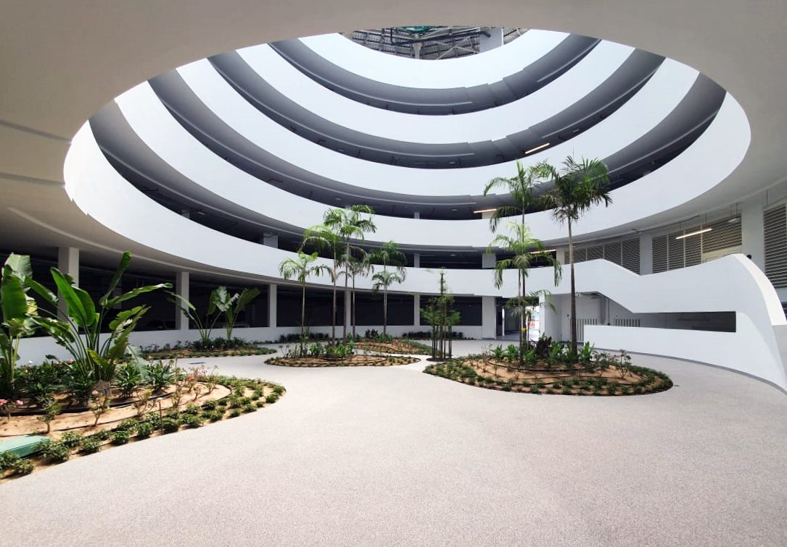

Drenante, antideslizante y sin juntas, para vivir el exterior todo el año: terrazas, caminos de jardín y accesos que aguantan sol, lluvia y paso constante sin apenas mantenimiento. Contenido detallado y galería de proyectos en Canarias, muy pronto.

Resineo también resuelve grandes superficies transitables en espacios urbanos y comunitarios.